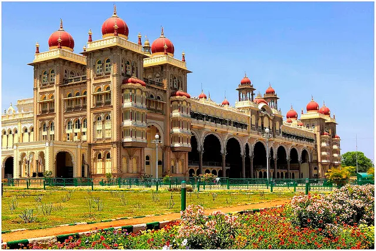
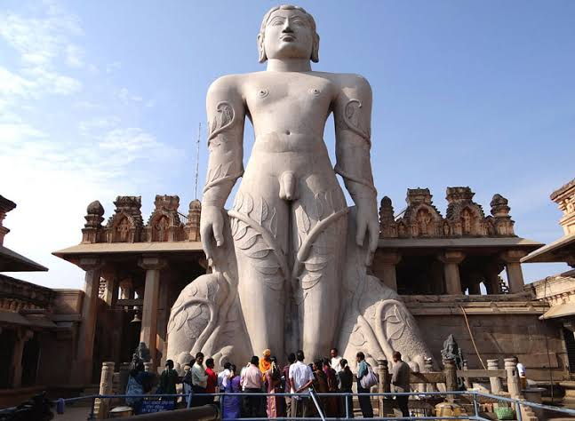
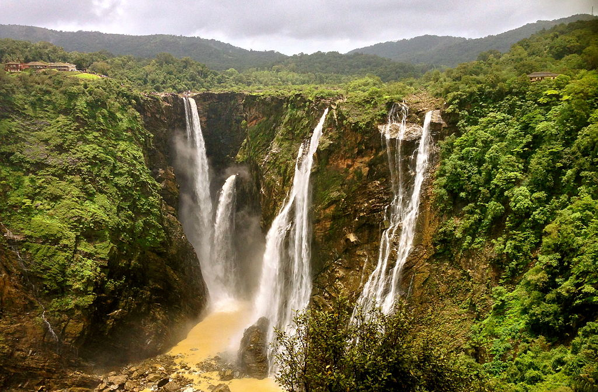
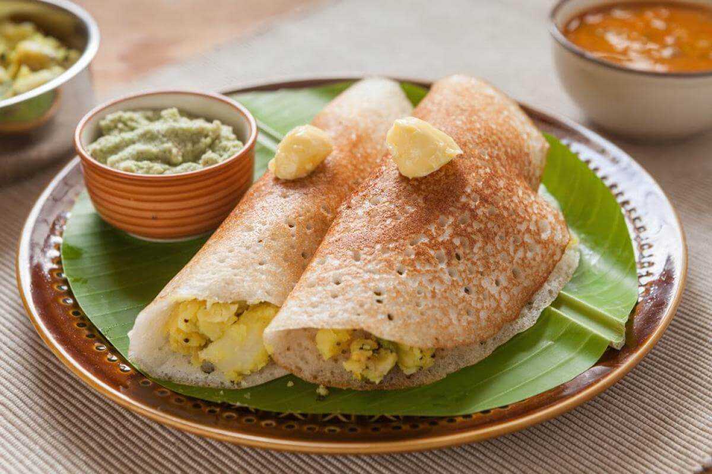
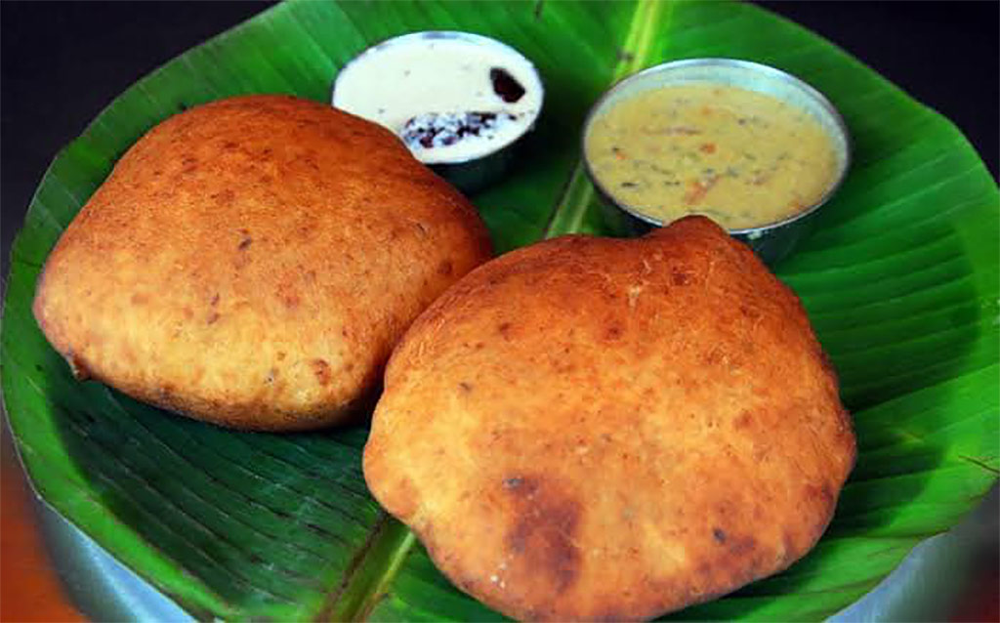
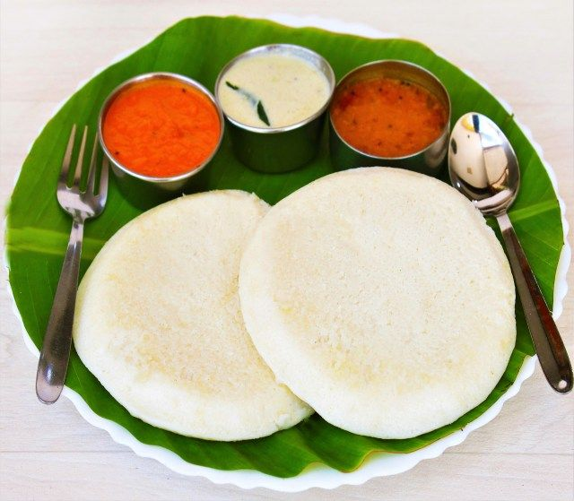

Hampi & Hospet
Surreal boulder-strewn landscape preserving ruins of the great 14th-century Vijayanagara Empire.

Mysuru (Mysore)
Cultural capital famed for its grand palace and vibrant Dasara festival.

Gommateshwara
Massive monolithic statue of Bahubali, a revered figure in Jainism, standing atop a hill in Mysuru.

Jog Falls
India's second-highest plunge waterfall, dropping 253 meters on the Sharavathi River in Shivamogga
Ragi Mudde
a traditional and nutritious staple food from Karnataka and parts of South India, served alongside a bowl of hot sambar or spicy curry

Dosa
A popular South Indian breakfast item made from fermented rice and lentil batter, typically served with chutney or sambar.

Mangalore Buns
Soft and fluffy buns that are a popular street food in Mangalore, often served with pickle or chutney.

idli
Small, soft cakes made from fermented rice and lentil batter, typically served with sambar or chutney.